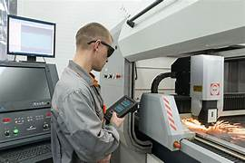

Básicamente los PLC resuelven requerimientos de control de procesos y secuencias de la maquinaria dentro del sector industrias, algunos ejemplos para los que se aplican estos controladores en la industria moderna son:

Maquinaria
- Máquinas de procesado de gravas, cementos y arenas.
- Máquinas industriales para la madera y los muebles.
- Maquinaria industrial del plástico.
- Herramientas complejas.
- Máquinas de ensamblaje.
Instalaciones
- Instalaciones de seguridad.
- Instalaciones de calefacción y aire acondicionado.
- Instalaciones de plantas para el embotellado.
- Instalaciones de transporte y almacenaje.
- Instalaciones para tratamientos térmicos.
- Instalaciones industriales azucareras.
Industria automotriz
- Aplicaciones en cadenas de montaje para soldaduras, cabinas de pintura, ensamblaje, etc.
- Uso en máquinas de herramientas como fresadoras, taladradoras, tornos, etc.
Fabricación de neumáticos.
- Control de maquinaria para la extrusión de gomas y el armado de cubiertas.
- Control de sistemas de refrigeración, calderas y prensas de vulcanizado.
Plantas químicas.
- Oleoductos, refinados, baños electrolíticos, tratamientos de aguas residuales y fecales, etc.
- Control de procesos como el pesaje, la dosificación, la mezcla, etc.
Con todos estos puntos, nos damos cuenta de que contar con un PLC dentro de tu fábrica, no solo mejorará la seguridad de tus empleados, si no que representará grandes ahorros.